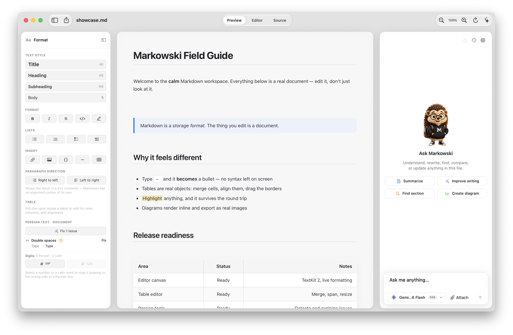

Rich editing, clean files
Headings, lists, links, code, and tables behave like document content—not syntax you have to stare at.
A native macOS workspace where your document is the editor, your files stay yours, and Markowski helps when you need it.
This document is the workspace. Formatting is visible, content is calm, and Markdown stays in the file.
Markowski turns Markdown into a real, readable document while preserving the plain-text file underneath. You get the focus of a writing app and the portability of Markdown.
Headings, lists, links, code, and tables behave like document content—not syntax you have to stare at.
Resize columns, merge cells, move through rows, and keep the Markdown round trip safe.
Ask about a selection or the whole file. Markowski can summarize, rewrite, search, and apply careful edits.
Preview, Editor, and Source are different ways to see the same file. Switch whenever the work calls for it.

Your documents remain on your Mac. AI requests happen only when you send a prompt, to the provider you choose. No account. No telemetry. No surprise sync.
Open a Markdown file and let the punctuation disappear.